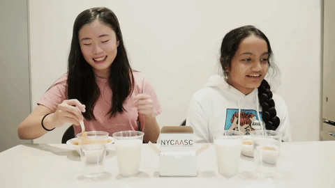
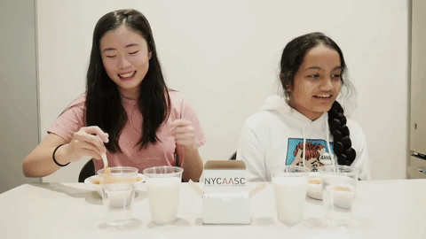

The 12th Annual
- Saturday, April 28th, 2018
- 11:00am–8:00pm
- NYU Kimmel Center
- 60 Washington Square South
Join us for the 12th year of the New York City Asian American Student Conference, a student-run, intercollegiate conference for Asian/Pacific Americans on global, local, and national scales.
Register for NYCAASC 2018Follow us on social media @nycaasc for updates!
#NYCAASC2018 #Emergence


Theme statement
“In this country, ‘American’ means white. Everybody else has to hyphenate.” - Toni Morrison
We are uniquely Asian - American. Like a strand of thread connecting two worlds, the hyphen often reminds us of how we are seen as neither fully Asian nor fully American. The Asian-American narrative emerges not from our own experiences, but from the stories that others have constructed about us, and our otherness comes from our existence between multiple worlds. This year’s conference will explore the theme of “Emergence.” - How have people emerged with an Asian-American identity because of, or in spite of, their lived experiences? How have Asian-Americans been rewriting history with their perspectives? Most importantly, how does one embrace the hyphen as a home? NYCAASC 2018 invites attendees to explore the social, cultural, and political conditions under which the different aspects of their Asian-American identities emerge. Together, we seek to build a future where everyone is able to proudly embrace their identities.
Location
NYCAASC 2018 will take place at NYU's Kimmel Center for University Life, located at 60 Washington Square South. Kimmel is a short walk from the following stations:
West 4th St - Washington Square (BDFM/ACE)
8th St - NYU (RW)
Astor Place (6)
Conference Schedule
E&L = Eisner and Lubin Auditorium
(located on the 4th floor across rooms 405 and 406)
| Time | Event |
|---|---|
| 11:00 – 11:30 |
Doors open & LunchRooms 405 & 406, E&L |
| 11:30 – 11:45 |
Opening RemarksE&L |
| 11:45 – 1:10 |
Workshops - Track 1GCASL 3rd Floor |
| 1:15 – 1:40 |
Breakout SessionGCASL 3rd Floor |
| 1:45 – 3:10 |
Workshops - Track 2GCASL 3rd Floor |
| 3:15 – 4:00 |
Keynote Speech – Kevin NguyenE&L |
| 4:00 – 5:20 |
Workshops - Track 3GCASL 3rd Floor |
| 5:30 – 6:30 |
DinnerRoom 405 & 406; E&L |
| 6:00 – 6:30 |
Q&A – Ronny ChiengE&L |
| 6:30 – 6:45 |
ClosingE&L |
| 6:45 – 7:45 |
Performances: jason chu, AzN PopE&L |
NYCAASC 2018 promo content
Get a sneak peek of this year's NYCAASC!
Fire Noodle Challenge
The team behind NYCAASC 2018: Emergence is hard at work behind the scenes!...or so we think. Get to know some of our members as they enjoy a delicious bowl of hellfire noodles.
 

Thank You to Our 2018 Sponsors
Gold
Bronze

Featured Speakers and Performers
We're so thrilled to have these awesome Asian Americans speak and perform at the 2018 NYCAASC conference! Don't miss them throughout the day!
NYCAASC 2018 Keynote Speaker
Kevin Nguyen
Kevin Nguyen is the Digital Deputy Editor at GQ Magazine, where he writes about the intersections of books, technology, and literary culture. Previously, he was a book reviewer for Amazon and editorial director at the startup Oyster, which was acquired by Google. He’s been published in the New York Times Book Review, The Atlantic, The Paris Review, and Grantland.
Special Guest Speaker
Ronny Chieng
Ronny Chieng is Chinese stand-up comedian and actor who started performing comedy in Melbourne in 2009. Since then he has had 4 sold out global stand-up comedy theater tours in Australia, New Zealand, Singapore, Malaysia and London. Ronny made his US television debut on the Late Late Show with Craig Ferguson in 2015.
In Australia Ronny has written and acted in multiple television comedy shows such as Problems (2012), Legally Brown (2014), It’s a Date (2013-2014), Kinne (2015) and more. In 2016 also co-created and starred in his own TV comedy pilot “International Student” on the ABC (Australia).
In 2015 Ronny moved to New York City after being hired as a correspondent on the Daily Show with Trevor Noah on Comedy Central. He also lost 11kg but that was unrelated to comedy.

Featured Performer
jason chu
Based in LA, hip-hop artist/poet/activist jason chu is on a mission to speak hope, healing, and justice in a broken world. He tells stories about friends and families wrestling with fear and joy, greed and hope, hurt and healing.
Jason has performed at over 170 colleges (NYU, UMass, Wisconsin, Dartmouth, Williams, Yale, etc.), conferences (Urbana, NYCAASC, ITASA, etc.), and community organizations across the country, including a 2015 Asia mini-tour to Hong Kong and Beijing. He has partnered with The White House to fight bullying in Asian-American communities and the Alameda County Government to speak up on mental health issues.
Jason's work has been covered by the Huffington Post, the LA Times, the China Daily, AngryAsianMan, and other outlets.

Featured Performer
AzN Pop!
AzN PoP is the world's first Asian-American "pop group" from the USA. AzN PoP is an oki-dokie fun-time pop band representing: Japan, China, Korea, Philippines, and even India!
“This all-girl Asian-American comedy group delivers biting satire with K-Pop cuteness...through song and satire, their material skewers the Asian-American experience and takes sharp digs at stereotypes and whitewashing — though disarmingly.” - PBS Newshour.